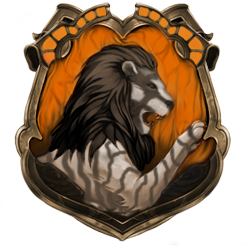
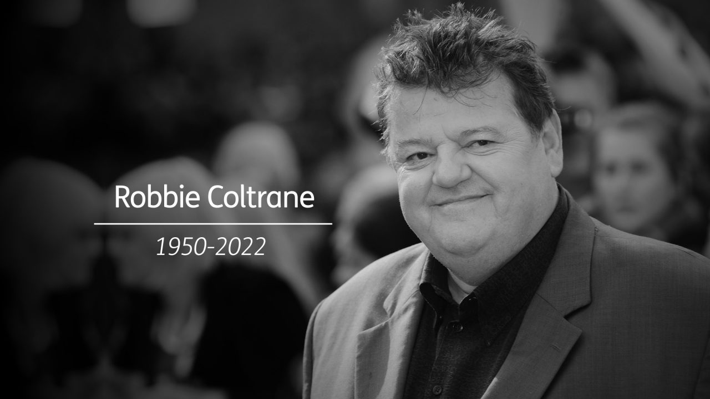

✞ 1950-2022 ✞
Anthony Robert McMillan OBE (30 de março de 1950 - 14 de outubro de 2022), conhecido profissionalmente como Robbie Coltrane , foi um ator escocês. Ele ganhou reconhecimento mundial nos anos 2000 por interpretar Rubeus Hagrid na série de filmes Harry Potter . Ele foi nomeado um OBE nas honras de Ano Novo de 2006 pela Rainha Elizabeth II por seus serviços ao drama. Em 1990, Coltrane recebeu o Evening Standard British Film Award - Prêmio Peter Sellers de Comédia . Em 2011, ele foi homenageado por sua " excelente contribuição " para o cinema no British Academy Scotland Awards . Coltrane começou sua carreira aparecendo ao lado de Hugh Laurie , Stephen Fry e Emma Thompson na série de esquetes Alfresco . Em 1987, ele estrelou a minissérie da BBC Tutti Frutti com Thompson, pela qual recebeu sua primeira indicação ao British Academy Television Award de Melhor Ator . Coltrane então ganhou destaque nacional estrelando como o psicólogo criminal Dr. Eddie "Fitz" Fitzgerald na série de televisão ITV Cracker , um papel que o levou a receber o British Academy Television Award de Melhor Atorem três anos consecutivos, de 1994 a 1996. Em 2006, Coltrane ficou em décimo primeiro lugar na pesquisa da ITV sobre as 50 maiores estrelas da TV , votada pelo público. [1] Em 2016, ele estrelou a série de quatro partes do Channel 4 , National Treasure , ao lado de Julie Walters , um papel pelo qual recebeu uma indicação ao British Academy Television Award . Coltrane apareceu nos filmes Mona Lisa e Nuns on the Run e como Valentin Dmitrovich Zukovsky nos filmes de James Bond GoldenEye e The World Is Not Enough . Ele também apareceu nos filmes Henry V , Let It Ride , Danny, the Champion of the World , Ocean's Twelve , The Brothers Bloom , Great Expectations e Effie Gray , e forneceu papéis de dublagem nos filmes de animação The Tale of Despereaux e Brave .
| Ano | Prêmio | Categoria |
|---|---|---|
| 1993 | Prêmio Royal Television Society | Prêmio de Performance - Masculino |
| 1994 | Prêmio da Academia Britânica de Televisão | Melhor ator |
| 1995 | Prêmio do Broadcasting Press Guild | Melhor ator |
| 1995 | Prêmio da Academia Britânica de Televisão | Melhor ator |
| 1996 | Prêmio da Academia Britânica de Televisão | Melhor ator |
| 2017 | Prêmio Royal Television Society | Melhor Ator - Masculino |
| 2017 | Festival de Televisão de Monte Carlo | Programa de Longa Ficção. Melhor Ator |
| 2017 | Prêmio do Broadcasting Press Guild | Melhor ator |
Coltrane sofreu de osteoartrite mais tarde na vida. Ele disse que sentia "dor constante o dia todo" em 2016 e, a partir de 2019, passou a usar cadeira de rodas. Coltrane morreu no Forth Valley Royal Hospital em Larbert , Escócia, em 14 de outubro de 2022, aos 72 anos. Ele esteve doente por dois anos antes de sua morte. Sua morte foi registrada por sua ex-esposa Rhona Gemmell; o atestado de óbito listou as causas como falência de múltiplos órgãos complicada por sepse , infecção do trato respiratório inferior e bloqueio cardíaco . Ele também havia sido diagnosticado com obesidade e diabetes tipo 2 .
